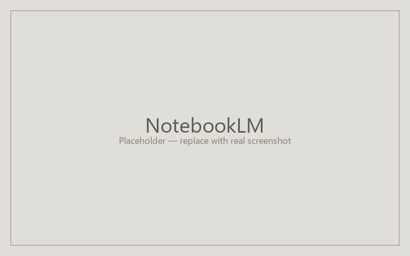

NotebookLM — a lightweight grounded-chat alternative
NotebookLM is not a peer to the four primary platforms in the agent-creation paradigm. It's a shareable grounded chat: upload sources, configure the chat behavior lightly, share a notebook link. Best for recipes where a faculty member wants to share grounded Q&A over uploaded materials without building a full agent. Two recipes in the catalog (Course FAQ Answerer and Reusable Course Assistant) reference NotebookLM as a lightweight alternative.

Create a notebook and add sources
Sign in at notebooklm.google.com and click "+ New notebook." Add sources from the left panel: PDFs, Google Docs, slides, or pasted text. NotebookLM grounds every answer in these sources, with citations back to specific passages. This is the recipe's Knowledge Base.
Configure the chat behavior (lightly)
Open notebook settings. NotebookLM does not expose a full system-prompt field the way Claude and ChatGPT do; what it offers is a shorter "persona / tone" hint and the ability to pin specific source documents as the primary grounding. Paste a condensed version of the recipe's Instructions into the persona field. Skip the Tools field — it's not applicable here.
Share the notebook
Use the Share button at the top right. Pick "Anyone with the link" or restrict to specific accounts. Recipients land in the same notebook chat with the same grounding. NotebookLM share links work across Google accounts; recipients don't need a paid tier.
| Recipe field | NotebookLM equivalent |
|---|---|
| Title | Notebook name |
| Description | Notebook description |
| Instructions | Persona / tone (condensed) |
| Knowledge Base | Sources |
| Tools | (not applicable) |
Last updated: pending.